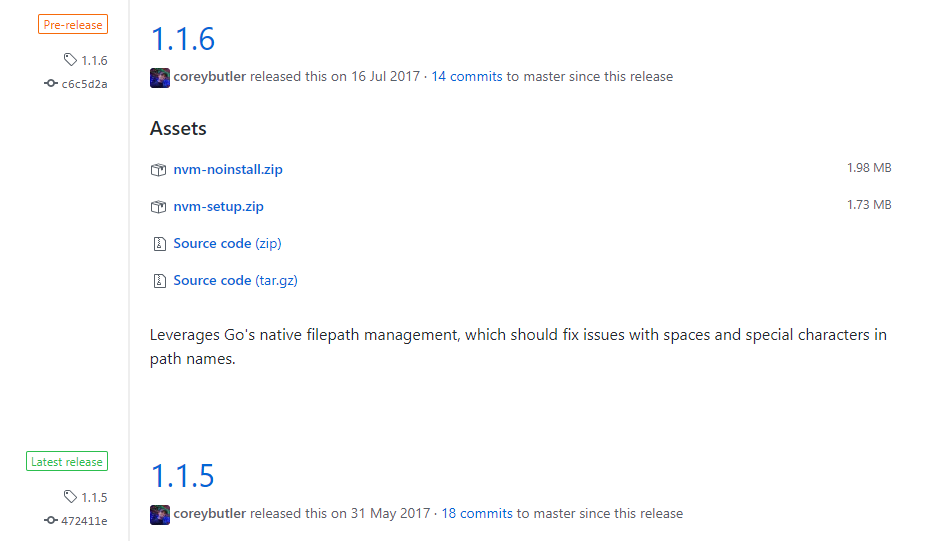
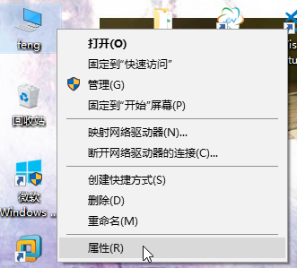
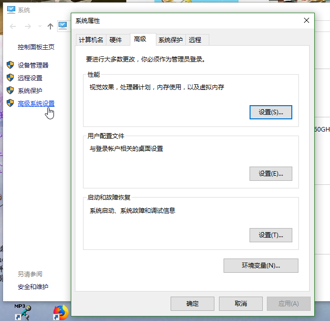
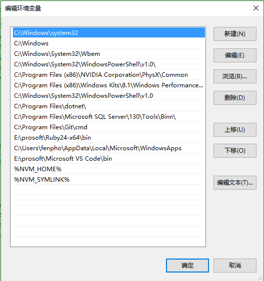

首先需要说明的是： nvm不支持Windows！！！，但是有替代品，也就是nvm-windows，类似git和git for windows一样。
第一步：点击下载 nvm，打开该项目在github上面的下载页面后，我们选择latest中的第一个：nvm-noinstall.zip，点击下载。

下载完成后解压到一个地方，比如: C:\dev\nvm 里面的文件列表是这样的：elevate.cmd、elevate.vbs、install.cmd、LICENSE、nvm.exe
备注：windows下要设置显示文件类型的扩展名，这样才能看到上述文件的后缀
双击 install.cmd 然后会让你输入”压缩文件解压或拷贝到的一个绝对路径” 先不用管它，直接回车，成功后，会在C盘的根目录生成一个settings.txt的文本文件，把这个文件剪切到C:\dev\nvm目录中，然后我们把它的内容修改成这样：
root: C:\dev\nvm
path: C:\dev\nodejs
arch: 64
proxy: none
node_mirror: http://npm.taobao.org/mirrors/node/
npm_mirror: https://npm.taobao.org/mirrors/npm/
然后我们开始配置环境变量了
右键点击我的电脑

点击属性，在弹出的页面中点击高级系统设置

弹出如上图所示窗口，点击右下角的环境变量即可。
因为刚刚点击了install.cmd的文件，那么会在环境变量的系统变量中，生成两个环境变量：NVM_HOME 和 NVM_SYMLINK 我们开始修改这两个变量名的变量值：NVM_HOME的变量值为：C:\dev\nvm； NVM_SYMLINK的变量值为：C:\dev\nodejs
%NVM_HOME%
%NVM_SYMLINK%

打开一个cmd窗口输入命令：nvm v ，那么我们会看到当前nvm的版本信息。然后我们可以安装nodejs了。
继续输入命令：nvm install latest 如果网络畅通，我们会看到正在下载的提示，下载完成后 会让你use那个最新的node版本。
如果你是第一次下载，在use之前，C:\dev目录下是没有nodejs这个文件夹的，在输入比如： nvm use 5.11.0 之后，你会发现，C:\dev目录下多了一个nodejs文件夹，这个文件夹不是单纯的文件夹，它是一个快捷方式，指向了 C:\dev\nvm 里的 v5.11.0 文件夹。
同样的咱们可以下载其他版本的nodejs，这样通过命令:nvm use 版本号 比如：nvm use 5.11.0就可以轻松实现版本切换了。
备注： 如果你的电脑系统是32 位的，那么在下载nodejs版本的时候，一定要指明 32 如： nvm install 5.11.0 32 这样在32位的电脑系统中，才可以使用，默认是64位的。
首先 npm是什么？
npm有两层含义，第一是npm这个开源的模块登记和管理系统，也就是这个站点：https://www.npmjs.com。
第二个指的是 nodejs package manager 也就是nodejs的包管理工具。我们主要说的就是这一个。
在每个版本的nodejs中，都会自带npm，为了统一起见，我们安装一个全局的npm工具，这个操作很有必要，因为我们需要安装一些全局的其他包，不会因为切换node版本造成原来下载过的包不可用。
首先我们进入命令模式，输入 npm config set prefix "C:\dev\nvm\npm" 回车，这是在配置npm的全局安装路径，然后在用户文件夹下会生成一个.npmrc的文件，用记事本打开后可以看到如下内容：
prefix=C:\dev\nvm\npm
然后继续在命令中输入： npm install npm -g 回车后会发现正在下载npm包，在C:\dev\nvm\npm目录中可以看到下载中的文件，以后我们只要用npm安装包的时候加上 -g 就可以把包安装在我们刚刚配置的全局路径下了。
我们为这个npm配置环境变量： 变量名为：NPM_HOME，变量值为 ：C:\dev\nvm\npm
在Path的最前面添加;%NPM_HOME%，注意了，这个一定要添加在 %NVM_SYMLINK%之前，所以我们直接把它放到Path的最前面
最后我们新打开一个命令窗口，输入npm -v ,此时我们使用的就是我们统一下载的npm包了。
同样的我们还可以安装cnpm工具，它是中国版的npm镜像库，地址在这里：https://cnpmjs.org/，也是npm官方的一个拷贝，因为我们和外界有一堵墙隔着，所以用这个国内的比较快，淘宝也弄了一个和npm一样的镜像库，http://npm.taobao.org/，它和官方的npm每隔10分钟同步一次。安装方式：
npm install -g cnpm --registry=http://r.cnpmjs.orgnpm install -g cnpm --registry=https://registry.npm.taobao.orgcnpm install 包名比如：cnpm install bower -g 就可以了。-g只是为了把包安装在全局路径下。如果不全局安装，也可以在当前目录中安装，不用-g就可以了。什么是nrm？
nrm就是npm registry manager 也就是npm的镜像源管理工具，有时候国外资源太慢，那么我们可以用这个来切换镜像源。
我们只要通过这个命令:npm install -g nrm就可以实现安装。
注意-g可以直接放到install的后面，我们以后也最好这样用，因为这样用，我们可以在cmd中上下箭头切换最近命令的时候，容易修改，更方便操作。安装完成后，我们就可以使用了。
nrm ls 用于展示所有可切换的镜像地址nrm use cnpm 我们这样就可以直接切换到cnpm上了。当然也可以按照上面罗列的其他内容进行切换